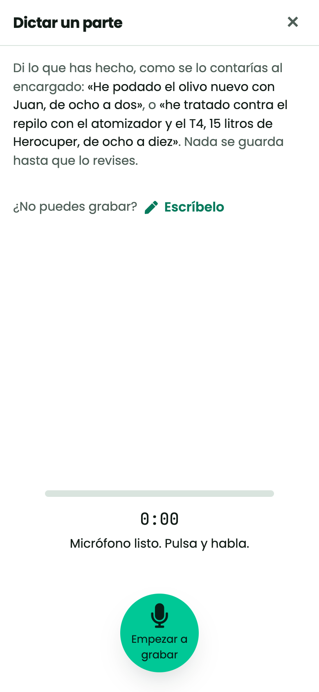
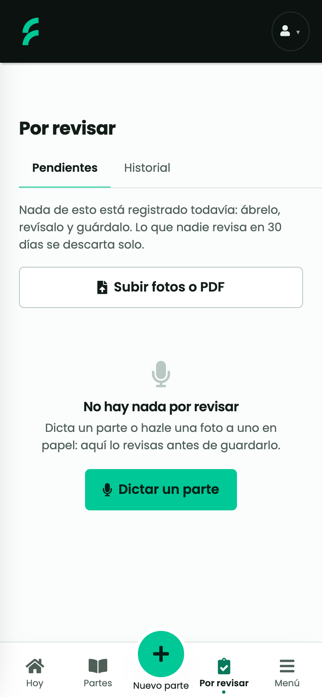

Dictar un parte por voz
Apunta un parte hablando: cuentas en voz alta lo que has hecho, como se lo contarías al encargado, y la app lo convierte en un borrador que tú revisas y guardas. Nada se registra solo: sin tu «Guardar parte» no hay parte. El recorrido es audio → transcripción → borrador → tu revisión → parte. Funciona sin cobertura: lo que grabas se queda guardado en el móvil y se envía solo en cuanto hay red.
Antes de empezar
- Pertenecer a una empresa (sin empresa no hay hoja de grabación).
- Lo que quieras nombrar —abonos, tractores, parcelas, personas— dado de alta: el dictado solo puede elegir entre los catálogos de tu empresa. Lo que no encaja se queda en blanco y se te pregunta al revisar.
Pasos
-
Pulsa «＋ Nuevo parte» y elige «Dictar» (mantener pulsado «＋» dicta directo). Se abre la hoja «Dictar un parte»; si perteneces a más de una empresa, elige cuál arriba.

-
Pulsa «Empezar a grabar» y habla cuando diga que el micrófono está listo. Como en los ejemplos de la propia pantalla: «He podado el olivo nuevo con Juan, de ocho a dos», «he tratado contra el repilo con el atomizador y el T4, 15 litros de Herocuper, de ocho a diez». Di la fecha si no es hoy, el horario, quién estaba, las máquinas y los productos con su cantidad. El botón pasa a «Terminar»; la grabación para sola a los 3 minutos.
-
Pulsa «Terminar» y sigue los tres pasos de la pantalla: «Subiendo el audio», «En cola: se procesa en unos segundos» y «Pasándolo a parte». Cuando está listo, se abre solo «Revisar parte dictado». Puedes cerrar antes sin perder nada: quedará en «Por revisar». Sin cobertura, el audio se queda guardado en el móvil (lo ves arriba, en «sin enviar») y sale solo cuando hay red; cada grabación viaja con su sello propio, así que un envío repetido nunca crea dos partes.
-
Revisa el borrador. Arriba, «Lo que dijiste» con el audio para volver a escucharlo. Debajo, una fila por dato (Labor, Cultivo, Fecha, Quién, Maquinaria, Productos, Superficie y caldo, Notas): cerrada se lee, abierta se edita. Las filas con algo pendiente llegan abiertas, y arriba se lista lo que falta («Falta la labor», «No encuentro “Aerovital” entre tus productos»…).
Cuánto fiarte de lo propuesto: la app no inventa nada. Solo elige entre lo dado de alta en tu empresa; lo que no encaja queda en blanco y se te pregunta. Junto a cada dato ves por qué conviene mirarlo: lo que se entendió cuando difiere del nombre del catálogo («oído: “el T4”»), la superficie supuesta («Supuesta: todo el cultivo»), las horas puestas por la app cuando no dijiste el horario («Horas puestas por la app · confírmalas»), quién quedó propuesto como trabajador («Propuesto: quien dictó») o un aviso de unidad («X: dicho en l; el catálogo lo lleva en kg»).
-
Pulsa «Guardar parte» (⌘↵ o Ctrl+↵). Sale «Registrado: …» con «Deshacer», el parte aparece en «Partes» con la marca «Dictado» y el dictado pasa al historial de «Por revisar» como «✓ Guardado», con la lista de campos que corregiste (o «sin correcciones»). Al guardar se borra el audio y quedan la transcripción y el parte; la transcripción se conserva 3 años como justificante (RD 1311/2012). Si no era nada, «Descartar» lo tira y punto.
-
Vuelve a «Por revisar» para lo que quede: el bloque de dictados encima de la lista de «Partes» (o «Abrir “Por revisar”») enseña cada dictado con su estado — «… Procesando», «↻ Reintento a las H:i», «◷ Por revisar», «✓ Sin dudas» o «No se pudo leer» — y los que ya puedes abrir. Los «✓ Sin dudas» se guardan de un clic con «Validar los N sin dudas»: tal cual se oyeron, con la misma lógica que si los abrieras y pulsaras Guardar sin tocar nada. En el escritorio, la bandeja abre el elegido en el panel de la derecha y se recorre con ↑ ↓ y ⌘↵.

Si algo va mal
- «No se pudo leer» → el dictado falló del todo. Desde la propia ficha puedes escuchar el audio («No se pudo transcribir. Escúchalo y decide») y elegir: «Volver a intentar» (vuelve a la cola) o «Descartar» y apúntalo a mano. Si el motivo es nuestro —el servicio de transcripción caído o la clave caducada— el audio se queda guardado en la bandeja: dale a «Volver a intentar» más tarde. Si ya no queda el audio, la app te lo dice: apúntalo a mano.
- Reintentos automáticos → cuando el servicio falla, el dictado se reintenta solo a los 1, 5, 30 y 120 minutos (así se anuncia: «↻ Reintento a las H:i»). Tras el quinto intento queda en «No se pudo leer» y ya no se reintenta solo. Un audio sin voz no se reintenta ni una vez: «No se entendió nada en el audio».
- «Ha sido muy corto. Espera a “Micrófono listo” y cuéntalo otra vez.» → la grabación duró menos de 2 segundos: vuelve a grabar.
- «Has llegado al máximo de envíos de hoy. Se mandará solo más tarde.» → tope diario de envíos (100). La cola del móvil lo reintenta después; lo grabado no se pierde.
- «No encuentro “…” entre tus productos» (o máquinas, cultivos, personas) → ese nombre no está dado de alta. Elígelo a mano en la revisión o dalo de alta y corrige la fila.
- Nadie lo revisa en 30 días → el dictado se descarta solo («Caducado: nadie lo confirmó en 30 días»). Lo pendiente no se acumula para siempre.